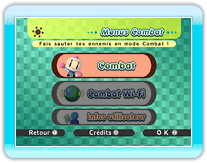

7 |
Démarrage |
 |
|
Tiens la télécommande Wii à l'horizontale comme indiqué à l'écran et appuie sur
 pour faire apparaître l'écran de titre. Appuie de nouveau sur pour accéder à l'écran Menus Combat. pour faire apparaître l'écran de titre. Appuie de nouveau sur pour accéder à l'écran Menus Combat.
Sélectionne un des trois menus proposés pour commencer une partie.
|
|||||||||||||||||||||||||||||||||
 |
 |
 |